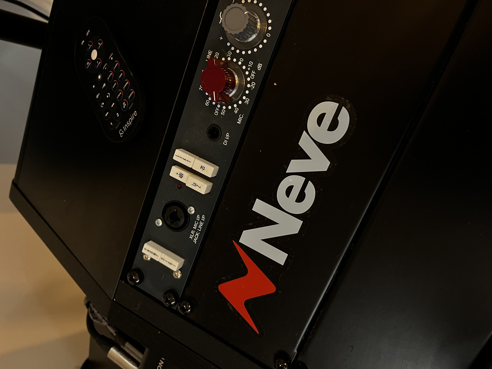
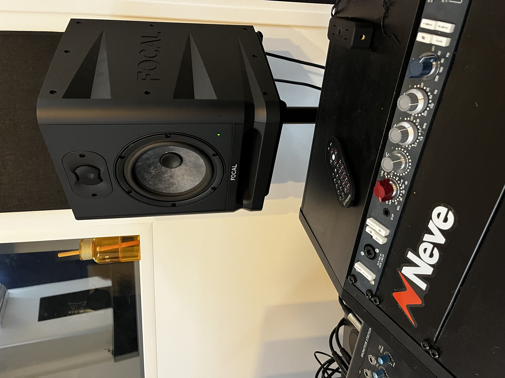
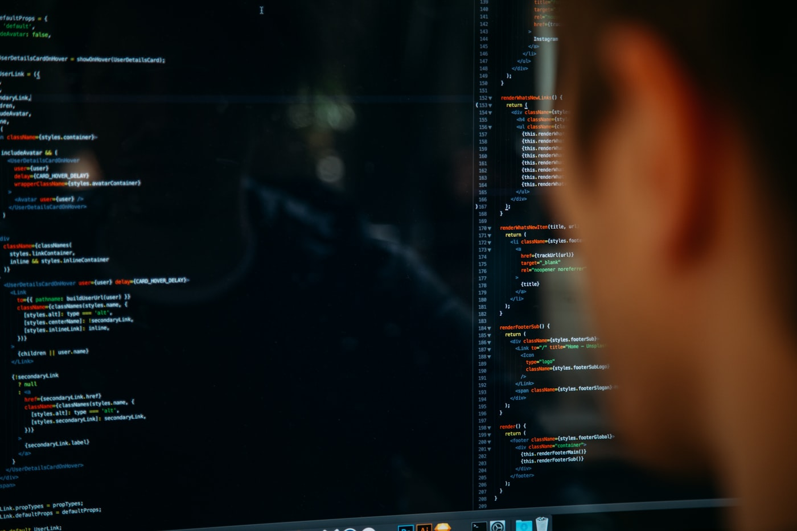
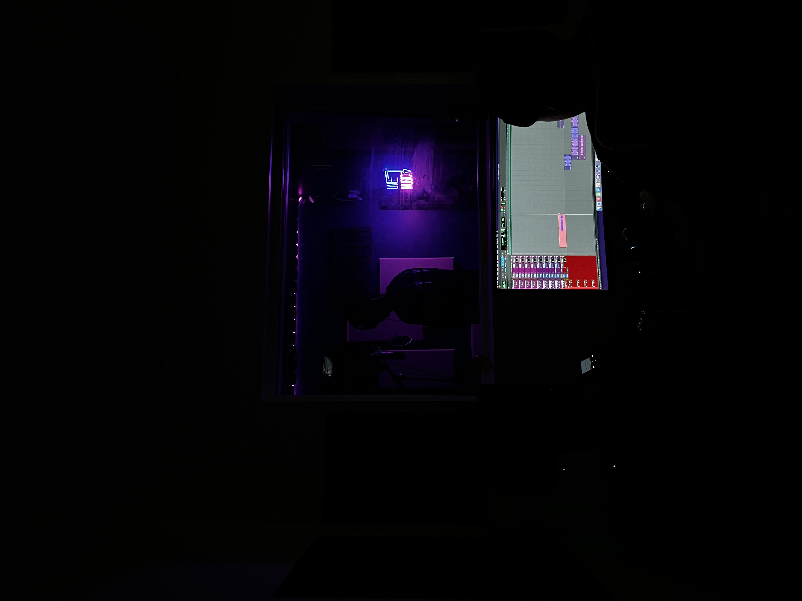

Sans studio, pas de rap ? Enquête sur l'envers du son
Derrière les millions de streams et les clips en tendance, un lieu reste essentiel mais largement invisible : le studio.
Le rap représente plus de la moitié des écoutes en streaming en France, mais son lieu de création principal reste méconnu du public. Loin du décor des clips, le studio est un espace de travail, de rigueur et d’expérimentation. Pourquoi
est-il si crucial pour les rappeurs, peut-être plus encore que pour les autres artistes ? Enquête dans l’envers du son.
Le rap, désormais au sommet : En vingt ans, le rap est passé du statut de musique de quartier à celui de genre le plus écouté du pays. Selon le Centre National de la Musique, il domine les écoutes des 12–35 ans. Sur Spotify
France, huit des dix artistes les plus streamés en 2023 faisaient du rap. Mais si le public voit les clips, les chiffres et les scènes, il ignore souvent l’endroit où tout se joue réellement : le studio.
Le studio, cœur secret de la création rap : Le rap se fabrique en studio. C’est là que se définissent le flow, la justesse des placements, la présence de la voix et la couleur générale du morceau. Contrairement à d’autres
genres, une grande partie du travail créatif se fait directement sur place : un artiste peut arriver avec quelques phrases, improviser, tester une mélodie ou trouver un gimmick en quelques prises. Le studio devient alors un laboratoire,
un espace où se construit une identité sonore.

Le préampli Neve est une légende analogique qui "réchauffe" le signal pour donner à la voix ce grain épais, puissant et professionnel typique des grands hits.

Sessions nocturnes improvisées : c’est souvent là que naissent les meilleures idées.
“C’est au studio que je trouve ma vraie voix” Malik, 22 ans, rappeur indépendant à Saint-Denis : « J’écris chez moi, mais c’est au studio que le morceau existe vraiment. Quand j’entends ma voix avec l’ingé, je vois ce
qui fonctionne. Sans le studio, je ferais juste des textes, pas de vraies chansons. » L’ingénieur du son est d’ailleurs une figure centrale du rap actuel. Il ajuste les fréquences, corrige l’énergie, guide l’artiste et donne une cohérence
au projet. C’est un partenaire créatif indispensable.
Un lieu social et un espace d’apprentissage : Le studio n’est pas seulement un endroit technique : c’est un lieu de rencontres. On y croise d’autres artistes, des beatmakers, des managers, des amis venus soutenir. De nombreuses
collaborations naissent ainsi, presque par accident. Dans certains quartiers, le studio sert aussi d’alternative : un endroit où canaliser son énergie, apprendre la discipline, éviter de “traîner dehors”.
“Le studio m’a sorti de ma routine” Rayan, 19 ans, habitué d’un studio associatif : « J’y allais juste pour accompagner mes potes. Maintenant j’y passe mes soirées. Ça m’a appris à bosser sérieusement. Tu rates, tu recommences,
mais tu progresses. »
Un accès encore inégal : L’accès au studio reste un frein majeur. Une heure coûte entre 25 € et 50 € en région parisienne. Sortir un single complet peut monter à plusieurs centaines d’euros pour un artiste indépendant.
Cette barrière économique empêche certains jeunes talents de professionnaliser leur son. Beaucoup renoncent ou publient des morceaux mal enregistrés, ce qui réduit leur visibilité dans une industrie très compétitive.
Pourquoi le studio est-il si essentiel au rap ? Le rap repose presque entièrement sur la voix. Contrairement à la pop ou au rock, qui peuvent s’appuyer sur des arrangements complexes, des musiciens ou des harmonies vocales,
le rap expose l’artiste de manière brute, presque nue. Tout se joue dans le timbre, le rythme, l’intention et même dans les respirations. Une syllabe en retard, une attaque trop sèche ou une énergie mal contrôlée peuvent suffire à
affaiblir un couplet. C’est précisément pour cette raison que le studio est essentiel : il permet d’affiner la précision rythmique, de capter la bonne intensité, de sculpter une identité vocale reconnaissable et d’équilibrer chaque
élément pour que le morceau sonne professionnel. Plus que dans n’importe quel autre genre musical, la voix du rappeur est son instrument principal, et le studio est le lieu où cet instrument se façonne, se renforce et révèle tout son
potentiel.
Un espace créatif en pleine mutation : Aujourd’hui, les studios ne servent plus seulement à enregistrer. Ils deviennent des lieux où se réfléchissent la direction artistique, la communication, la stratégie TikTok, voire
la sortie Spotify. Même si certaines technologies d’IA font leur apparition, les rappeurs restent profondément attachés à la création humaine, à l’échange, à l’énergie collective d’une session.
Le rap a changé la manière de faire de la musique en France, mais il n’a jamais cessé de passer par le studio. Même si les outils numériques semblent permettre à chacun de produire chez soi, le studio reste un point de passage indispensable
pour donner une véritable identité sonore à un projet et franchir un cap professionnel. Il joue un rôle artistique, social et même culturel. Finalement, on peut enregistrer n’importe où, mais construire un son durable, ça se fait rarement
sans studio. Le rap n’a peut-être jamais eu autant besoin de ces lieux qu’aujourd’hui.
Auteur : Enes GUNDEM
AUTRES ARTICLES
Comment l'intelligence artificielle transforme les studios d'enregistrement

Console hybride, écrans de machine learning et faders motorisés : l’IA s’invite au cœur du mix.
Ces dernières années, l'intelligence artificielle s'est peu à peu invitée dans l'univers de la musique. Dans les studios d’enregistrement, elle ne se contente plus d’être un simple outil : elle influence les méthodes de travail,
redéfinit les métiers du son et ouvre la voie à une nouvelle façon de créer. Une évolution qui intrigue autant qu’elle interroge, en France comme ailleurs.
Quand les algorithmes s'installent en studio
Dans les studios français, l’IA n’est plus un concept lointain. Elle se glisse dans les logiciels de mixage, optimise les prises de voix et anticipe même les corrections nécessaires. Plusieurs ingénieurs du son expliquent que ces
outils permettent de gagner un temps considérable sur les réglages techniques.
L’un des exemples les plus cités dans le secteur est celui des outils de restauration audio intégrés dans les logiciels professionnels. D’après les observations publiées par le Centre national de la musique (CNM) en 2023, les studios
utilisent de plus en plus des systèmes capables d’isoler une voix, de réduire un bruit ambiant ou de reconstituer des fréquences perdues. Ce type de manipulation, autrefois réservé à un travail minutieux et long, peut désormais
être automatisé sans perte notable de qualité.
Cette évolution ne remplace pas le métier : elle le transforme. Les ingénieurs ne se contentent plus d’ajuster un son ; ils interprètent désormais les résultats générés par l’IA pour affiner le rendu. La machine prépare, l’humain
décide.
Une aide précieuse pour les artistes en développement
L’arrivée de l’IA a aussi changé la manière dont les jeunes artistes travaillent. Les studios, conscients de l’importance de proposer des outils accessibles, intègrent aujourd’hui des assistants virtuels capables de suggérer des
harmonies, d’analyser la justesse d’une voix, ou de proposer des pistes instrumentales.
Selon une enquête réalisée par la Sacem en 2023, près d’un auteur-compositeur sur trois utilise déjà des outils d’assistance algorithmique pour préparer des maquettes avant d’entrer en studio.
Pour beaucoup, ces outils permettent d’arriver en séance avec des idées mieux structurées, ce qui rend le travail final plus fluide. Certains studios parisiens observent même une hausse de la productivité : les artistes bouclent
davantage de titres en moins de temps, ce qui améliore leur capacité à expérimenter. À l’international, le phénomène est encore plus marqué. Le rapport 2023 de l’UNESCO sur l’intelligence artificielle dans la création culturelle
souligne que l’IA sert aussi de passerelle entre des artistes éloignés géographiquement. Des projets collaboratifs ont ainsi vu le jour entre des musiciens basés à Londres, Tokyo ou Montréal grâce à des systèmes d’analyse automatique
des pistes musicales, facilitant le travail à distance.
Des studios plus agiles face aux nouvelles pratiques musicales
Le streaming a bouleversé les codes de la production musicale. Les titres sont plus courts, les sorties plus fréquentes, et la concurrence plus forte. Pour rester dans la course, les studios se modernisent.
Une étude du ministère de la Culture publiée en 2024 sur l’économie musicale indique que les studios qui adoptent des outils d’intelligence artificielle enregistrent une hausse de leur activité, notamment en post-production et
mastering. Certains établissements vont encore plus loin en proposant des services hybrides : demi-journées en studio pour enregistrer une voix ou un instrument, puis finalisation du mixage à distance grâce à des systèmes automatisés.
Cette flexibilité séduit les artistes indépendants, nombreux en France, qui peuvent ainsi réduire les coûts tout en conservant un encadrement professionnel.
Mais l’automatisation ne signifie pas uniformité. L’IA s’adapte au style recherché, en se basant sur des tendances musicales analysées dans d’immenses bases de données. D’après les données compilées par le Hub France IA en 2024,
ces technologies permettent également d’anticiper des erreurs techniques ou d’ajuster un son selon les standards des plateformes de streaming.
Une évolution qui soulève des questions
Si l’IA facilite certains aspects du travail en studio, elle suscite aussi des interrogations. Certains professionnels craignent une forme de dépendance technologique, ou que les artistes les plus jeunes confondent assistance et
création.
Les instances françaises du secteur musical gardent un œil attentif sur cette évolution. Le CNM, dans une note d'analyse publiée en 2024, rappelle que l'IA doit rester un outil au service des créateurs, et non un substitut à leur
vision artistique. L'enjeu principal reste la maîtrise : comprendre ce que font les algorithmes, savoir interpréter leurs choix, et continuer à défendre une identité sonore propre à chaque artiste. Les studios qui adoptent
l'IA ne deviennent pas moins humains. Ils deviennent simplement plus stratégiques.
Auteur : Sofiane SAIDJ
Un résultat inattendu : Home Studio vs Studio Professionnel

Les home studios se parent désormais des mêmes codes visuels que les grands espaces pro.
Introduction
Ces dernières années, créer de la musique depuis chez soi n’a jamais été aussi simple. Un ordinateur, une carte son et un micro feront largement l’affaire pour commencer à produire. Cette manière de créer de la musique se démocratise
énormément, et de plus en plus d’artistes envisagent d’avoir un home studio (studio à domicile en français) pour pouvoir s’enregistrer.
La production musicale s’est largement démocratisée. Comme l’explique Jérôme Dupont, un producteur reconnu :
« La démocratisation du home studio a ouvert de nouvelles opportunités pour les artistes et les producteurs en devenir. Il n’est plus nécessaire de dépenser des sommes considérables pour accéder à un studio professionnel. Avec
le bon équipement et les bonnes compétences, chacun peut désormais produire sa musique depuis chez soi. »
La crise sanitaire fait aussi partie des principaux leviers révélateurs d’avoir un home studio. En effet, les artistes qui en avaient un ont pu profiter du confinement pour enregistrer leurs projets au chaud tout en perfectionnant
leur maîtrise et leurs techniques d’enregistrement.
L’avantage du Home Studio
Le principal avantage du home studio, c’est son accessibilité. Plus besoin de réserver des créneaux coûteux pour avancer sur ses projets, c’est aussi un gain de temps en termes de transports. En plus de l'accessibilité, il offre
une liberté artistique totale : tu peux enregistrer quand tu veux, expérimenter différents styles et progresser à ton rythme, sans pression extérieure.
Le home studio est un très bon allié pour les artistes indépendants, car il est beaucoup plus accessible en termes de tarifs. Imaginons que tu as déjà un ordinateur portable : il faut compter une moyenne de 300 € pour un studio
basique (micro, carte son et enceintes de monitoring). Tandis que l’enregistrement dans un studio pro s’élève à environ 35 € de l’heure.
Tu l’auras compris, en même pas une semaine de travail, tu as déjà rentabilisé ton propre home studio. Cependant, il te faudra de la maîtrise et des connaissances techniques pour arriver à faire le mix que tu souhaites.
Le home studio ne sert pas qu’aux petits artistes. En effet, de nombreuses stars de l’industrie en ont un, c’est le cas de Billie Eilish, Disclosure, Drake ou même encore les Daft Punk.
Prenons l’exemple des Daft Punk, un groupe français mondialement connu, qui ont enregistré un de leurs projets dans son home studio :
« Je me souviens que j’avais fait le beat de Da Funk dans la chambre de mon frère. C’était vraiment un beat tout pourri, mais je trouvais ça mortel… Je n’avais aucun recul. Ensuite, on a trouvé le son de la mélodie et le reste
du morceau. Ça s’est fait sans qu’on maîtrise quoi que ce soit, spontanément. » — Guy-Manuel de Homem-Christo
Cependant, le home studio a aussi ses limites. Le matériel reste généralement moins performant que celui des studios professionnels, et il manque l’accompagnement technique ou artistique d’un expert. C’est souvent pour cette raison
que les artistes souhaitant passer un cap finissent par se tourner vers des studios professionnels.
L’avantage des Studios Professionnels
Les studios professionnels possèdent de nombreux avantages. Même si les tarifs peuvent sembler élevés, c’est un investissement qui peut valoir le coup. Les studios d’entrée de gamme se situent en général entre 35 € et 50 € de l’heure.
Et si tu veux bénéficier d’un service haut de gamme avec les meilleurs outils, il faudra débourser entre 100 € et 200 € de l’heure pour les grands studios présents dans des métropoles comme Paris, Londres ou même aux États-Unis.
Ces prix s’expliquent par le fait que les studios permettent d’accéder à une qualité sonore supérieure grâce à un matériel professionnel. On est loin du home studio à 300 € que la majorité des artistes possède. Ici, rien que le
micro peut valoir 300 €, et certains studios en ont plusieurs différents. Le matériel peut valoir des milliers d’euros, que ce soit les instruments, les tables de mixage ou les abonnements aux logiciels professionnels.
Tu l’auras compris, la qualité des outils présents dans un studio professionnel n’a rien à voir avec ceux d’un home studio (sauf si tu as énormément d’argent pour bien équiper ton home studio, mais bon c’est pas le cas de tout
le monde).
Prenons l’exemple des studios d’enregistrement parisiens, qui ont servi à produire des hits pour des artistes mondialement connus comme Pharrell Williams, Kanye West, Beyoncé ou encore les célèbres Daft Punk.
De plus, dans ces studios, tu ne payes pas seulement du matériel haut de gamme, tu payes aussi la prestation d'experts de l'industrie. Ces personnes peuvent te guider et apporter un avis extérieur essentiel. En somme, malgré le
prix qui peut sembler élevé, les studios professionnels sont un pas vers une qualité supérieure. Ton projet sonnera beaucoup plus professionnel à sa sortie, ce qui peut aussi maximiser tes chances d'être repéré.
Auteur : Jeremy PARADIS
Accessibilité de la musique
Les studios associatifs demeurent des lieux d’accueil essentiels pour les jeunes artistes.
Introduction
Créer un son n’a jamais été aussi accessible qu’aujourd’hui. De par les logiciels, le matériel d’enregistrement et les formations, la musique est désormais à la portée de tous. Et tout cela est un peu normal, quand on regarde les
avancées technologiques de ces vingt dernières années.
Si dans les années 90, le format MP3 arrivait comme un complément au CD, cela s’est encore plus développé par la suite. Ceci s’est encore plus développé avec l’arrivée de logiciels de production musicale (Pro Tools, Ableton Live…),
des outils qui permettent de mixer et de créer un son depuis son ordinateur personnel. On peut mentionner aussi l’arrivée du streaming, qui a ensuite démocratisé les écoutes.
Une tendance au numérique
Si le streaming ou l’arrivée des outils n’ont pas été une évidence pour tout le monde au départ, cela l’est devenue avec la pandémie en 2020 et 2021. En effet, les confinements successifs ont accéléré l’adoption des outils numériques
dans le domaine musical. Privés de concerts et de studios, les gens se sont tournés vers des solutions en ligne pour continuer à produire ce qu’ils aiment.
De ce fait, on vit dans une époque où le son passe par le numérique, où le son peut se faire naturellement chez soi. De grands noms ont pu produire solo sans trop investir, et se faire connaître, donc c’est la porte ouverte à tout
le monde. Cela dit, est-ce que cela ne poserait pas un problème dans le futur ?
Un changement problématique ?
L’explosion du numérique et des outils accessibles a profondément bouleversé la manière de créer, mais aussi de vivre de la musique. Après le confinement, beaucoup d’artistes se sont habitués à produire seuls, chacun dans son coin,
délaissant malgré eux le côté social et collaboratif qui fait pourtant la force de la création musicale.
Si chacun peut désormais composer un son depuis sa chambre, cette autonomie généralisée crée un paradoxe : la concurrence devient exponentielle. Des millions de titres sortent chaque année sur Spotify, Deezer ou YouTube. Résultat
: la visibilité des artistes indépendants s’effondre. Selon le rapport 2023 du Centre national de la musique, plus de 80 % des morceaux disponibles en ligne ne dépassent pas 1 000 écoutes. Le rêve de “percer depuis sa chambre”
existe, mais pour la grande majorité, il reste virtuel.
Enjeux de la musique dite accessible
Cette démocratisation pose donc un dilemme : plus de liberté, mais aussi plus de fragilité. Les artistes indépendants dépendent désormais d’algorithmes et de plateformes qui décident en grande partie de leur visibilité. Les revenus,
eux, peinent à suivre : les écoutes en streaming rapportent peu, et les labels se concentrent davantage sur des artistes déjà établis, laissant moins de place aux nouvelles voix.
Malgré cela, il y a les studios d’enregistrement. Les studios misent sur ce que le numérique ne peut pas offrir : un véritable lien humain. Dans ces lieux physiques, les artistes sont accompagnés, conseillés, rassurés. Les fondateurs
et techniciens cherchent volontairement à instaurer une atmosphère chaleureuse, presque familiale, car la création musicale repose aussi sur la confiance et le sentiment d’être à sa place.
Pour des artistes novices, jeunes ou peu expérimentés, cette proximité fait souvent la différence — un soutien que ne peut remplacer un simple logiciel ou une vidéo tutorielle.
En Résumé
La musique n’a jamais été aussi simple à créer, à produire, à partager, et la crise sanitaire a encore plus mis en valeur les logiciels accessibles partout sur le Net. Mais cette simplicité s’accompagne de nouveaux défis : économiques,
sociaux et même culturels. Si le numérique a libéré la création et multiplié les possibilités, il a aussi fragilisé les revenus et complexifié la visibilité des artistes.
Dans ce paysage en mutation, les concerts, les performances live et les formes plus traditionnelles de pratique musicale restent essentiels : ils recréent du lien, offrent une expérience humaine irremplaçable et demeurent l’un
des rares espaces où les artistes peuvent encore vivre de leur art.